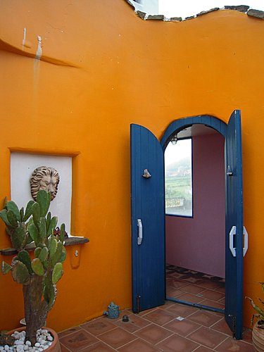

或許
妳曾有多次暢遊恆春半島之經驗，
但妳是否想嘗試
以不同的方法領略墾丁之美呢？
以時速20公里的速度，
讓秋日的海風輕拂髮梢，
悠哉的讓一幕一幕之
萬里桐、紅柴坑、龍鑾潭、船帆石、香蕉灣、
風吹沙、港口吊橋、出火等美麗景點，
陸陸續續的SHOW出在妳眼前，
妳會發現
這將是妳一生當中
浪跡天涯海角-----最美好的記憶。
現在就請妳想像自己正踩著自行車
跟隨河東獅--秋的饗宴--
--墾丁之旅---一同遨遊吧.....
@集合
@宣揚隊威
@啟航
@帥氣
@幸福
@力士
@康健
@悠遊
@神怡
@交流
@補給
@瓊麻館
@船帆石看海
@品茗
@船帆石附近是新興的民宿區，
一幢幢漂流特色民宿，
近來係港澳遊客的最愛。
@香蕉灣小港口旁的民宿，
面港面海，頗有寧靜之美。
@香蕉灣於日據時代係捕鯨船的重要據點。
翻拍相片係昔日捕鯨盛況。
@香蕉灣的特色餐館及海鮮樓

@本港海鮮樓當日之龍蝦王，重達近5斤。
@本港餐館之海鮮料理，新鮮爽口，值得一嘗。

@午餐後參觀船帆石的優質民宿—小徑民宿
@傳說中小徑民宿5樓頂----夢幻船屋套房----
據聞是最夯的觀海賞景套房，
造型設計別緻—FU係一級棒，
老闆介紹網路訂房要一年後才可訂得—
有興趣者，記得提早訂房喲……

@小徑民宿一隅
@於民宿庭院—泡茶小憩
@民宿之超人氣寵物—菲菲貓
.......待續..........................